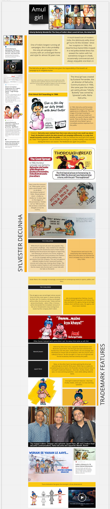

Idea
Idea
Amul topicals have touched the hearts of Indians for more than 40 years now. Liked by all ages, these witty and adorable topicals have been a reflection of the society and it's mood. Being highly contexual and relevant The idea is to decode the the Amul topicals which have been among the longest running advertisement campaignes in the world.
Research
Amul has an archive of all the Amul topicals made since 1967 but looking at the graphic would not be sufficient. To understand indepth of what the Amul topicals have been trying to do, more domain knowledge was needed.
Below is the information gathered from various sources and researches done on the topicals. -
Link to Miro board -->

Data Collection
Amul's website has an archive of all the topical advertisements released till date with their titles.